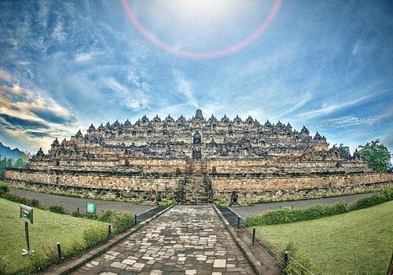

Atraksi Populer

1. Waterbom bali
Taman air dengan bar Kolam renang, Kolam arus, dan beragam wahana. Termasuk sistem pembayarantanpa uang tunai dan pencari reaksi dan penggemar sensasi.

2. Borobudur Jawa Tengah
Candi yang di bangun pada abad ke-8 dan ke-9 ini terletak di jawa tengah. Dalam tiga Tingkat, dasar berbentuk persegi dengan lima konsetris.

3. Tanah Lot Bali
Bangunan penting di Bali, terkenal karena keunikannya di lepas pantai dan latar belakang matahari terbenam. Kuil kuno yang bertengger di atas batu di tengah-tengah reruntuhan

4. Uluwatu bali
salah satu dari enam pura utama yang diyakini sebagai pilar spiritual Bali, bertengger di atas tebing terjal 70 meter di atas permukaan laut. Juga memiliki latar belakang matahari terbenam yang indah.